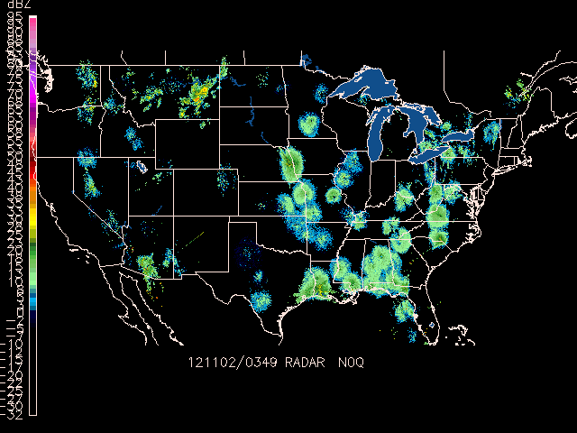

GDRADR samples NEXRAD Level III (NIDS) products to a common
grid projection.
GDFILE specifies the output grid file. If the file does not already
exist, the file is created using the grid defined by CPYFIL,
or if CPYFIL is not defined then by PROJ, GRDAREA, and KXKY.
CPYFIL may provide either an existing grid file to read the projection
information from, or a grid number (#nnn) defined in grdnav.tbl.
STNFIL is the station table which supplies radar IDs to be searched
for the composite. If STNFIL is blank, then nexrad.tbl is used
by default.
GDPFUN is a list of data parameters for which composites are created.
The NEXRAD file naming is assumed to be such that the site identifier
and the product type are both present in the directory/file naming
structure.
Create a National composite of NEXRAD base reflectivity (N0Q). Use the current time with a 30 minute window for data. Use the nexrad.tbl station table.
Create the grid output file using the YYYYMMDD_radar.gem file name
template. Accept data only from radars operating in precipitation
mode.
PROJ = lcc/25;-103;60
GRDAREA = 23.0;-120.0;47.0;-65.0
KXKY = 720;500
GDPFUN = n0q
GDFILE = YYYYMMDD_radr.gem
RADTIM = current
RADDUR = 30
RADFRQ =
CPYFIL =
STNFIL = nexrad.tbl
MAXGRD = 1000
RADMODE = P
Examine the contents with GDINFO:
GDFILE = 20121102_radr.gem
LSTALL = YES
OUTPUT = T
GDATTIM = all
GLEVEL = all
GVCORD = all
GFUNC = n0q
GEMPAK-GDINFO>
Now color-fill the N0Q reflectivity contours with GDPLOT2:
GDFILE = 20121102_radr.gem
GDATTIM = last
GLEVEL = 0
GVCORD = none
PANEL = 0
SKIP = l
SCALE =
GDPFUN = n0q
TYPE = f
CONTUR = 2
CINT = l
LINE =
FINT = 5/5
FLINE = 0;30-7
HILO =
HLSYM =
CLRBAR = 1
WIND = 0
REFVEC =
TITLE = @
TEXT = 1/2//hw
CLEAR = y
GAREA = us
IJSKIP = 0
PROJ = lcc/25;-103;60
MAP = 1
MSCALE = 0
LATLON = 0
DEVICE = xw
STNPLT =
SATFIL =
RADFIL =
IMCBAR = 1
LUTFIL =
STREAM =
POSN = 0
COLORS =
MARKER = 0
GRDLBL = 0
FILTER = YES
NEX2IMG samples NEXRAD Level III (NIDS) products to a common
grid projection, and then creates a GIF format image raster.
NEX2IMG is not limited by the traditional LLMXGD
limitation for grid files.
GRDAREA Area covered by grid PROJ Map projection/angles/margins|drop flag KXKY Number of grid points in x;y CPYFIL Grid file whose navigation is to be used in new grid file | subarea GFUNC Scalar grid RADTIM Radar composite current/dattim RADDUR Radar time window (minutes prior to RADTIM) RADFRQ Update Frequency STNFIL Station information file RADMODE Radar operational mode SATFIL Satellite image filename(s) COMPRESS output in compressed format
NEX2GINI uses a suplemental table $GEMTBL/unidata/nex2gini.tbl to specify
configurations for data to pixel mappings.
SATFIL specifies the output file. If the file already exists,
it is overwritten.
CPYFIL may provide either an existing grid file to read the projection
information from, or a grid number (#nnn) defined in grdnav.tbl.
PROJ, GRDAREA, and KXKY define a grid navigation as in GDCFIL if
CPYFIL is blank.
STNFIL is the station table which supplies radar IDs to be searched
for the composite. If STNFIL is blank, then nexrad.tbl is used
by default.
GFUNC is the data parameter which the composite is created for.
The NEXRAD file naming is assumed to be such that the site identifier
and the product type are both present in the directory/file naming
structure.
Create a 1km National composite of NEXRAD base reflectivity (N0Q).
Use the current time with a 30 minute window for data. Use the nexrad.tbl station table. Create the GINI
output file using the rad_YYYYMMDD_HHNN file name template.
Accept data from radars operating in precipitation and
clear air mode.
GRDAREA = 25;-128;50;-65
PROJ = mer
KXKY = 4000;2400
CPYFIL =
GFUNC = n0q
RADTIM = current
RADDUR = 5
RADFRQ = 0
STNFIL = nexrad.tbl
RADMODE = PC
SATFIL = rad_YYYYMMDD_HHNN
COMPRESS =
GEMPAK-NEX2GINI>r
You now have the rad_YYYYMMDD_HHNN in your working directory.
Display the NEXRAD composite as a satellite image in GPMAP:
MAP = 1
MSCALE = 0
GAREA = 25;-128;50;-65
PROJ = sat
SATFIL = rad_20121102_0349
RADFIL =
IMCBAR = 1/V/LL/0.05;0.04/0.925;0.0125/-5
LATLON =
PANEL = 0
TITLE = 1/-2
TEXT = 1/2//hw
CLEAR = y
DEVICE = xw
LUTFIL = upc_ref256.tbl
STNPLT =
VGFILE =
AFOSFL =
AWPSFL =
LINE =
WATCH =
WARN =
HRCN =
ISIG =
LTNG =
ATCF =
AIRM =
GAIRM =
NCON =
CSIG =
SVRL =
BND = lakes/24
TCMG =
QSCT =
WSTM =
WOU =
WCN =
WCP =
ENCY =
FFA =
WSAT =
ASCT =
TRAK1 =
TRAKE =
TRAK2 =
GEMPAK-GPMAP>r

nex2img operates the exact same way as nex2gini , only it outputs the radar data directly to a GIF image.
To create a composite of NEXRAD base reflectivity (N0Q), use the current time with a 30 minute window for data. Create the GIF output file using the YYYYMMDD_HHNN.gif file name template.
Accept data from radars operating in precipitation and
clear air mode.
GRDAREA = 25;-125;50;-65
PROJ = MER
KXKY = 4000;2400
CPYFIL =
GFUNC = n0q
RADTIM = current
RADDUR = 30
RADFRQ =
STNFIL = nexrad.tbl
RADMODE = PC
RADFIL = YYYYMMDD_HHNN.gif
LUTFIL = upc_rad24.tbl
GEMPAK-NEX2IMG>r
GPNIDS plots NEXRAD Level III products.
RADFIL is the NEXRAD Level III input file. A template may
be specified, with an optional site name and product type
(eg NEXRIII|DDC|NWV). If a site name is provided, it will
be used to replace the %SITE% alias in the template name.
If a product type is provided, it will be used to replace
the %PROD% alias in the template string if present. Products
will br plotted in graph or map coordinates depending on
the type of product. For VAD wind profile products (NVW) the
display is graph coordinates, while raster and radial images,
and overlay products (eg mesocyclone, storm track, tvs etc) are
displayed in map coordinates. The NEXRIII template is provided
for NEXRAD Level III files.
RADFIL Radar image filename(s) RADTIM Radar composite current/dattim TITLE Title color/line/title PANEL Panel loc/color/dash/width/regn DEVICE Device|name|x size;y size|color type CLEAR Clear screen flag TEXT Size/fnt/wdth/brdr/N-rot/just/hw flg COLORS Color list WIND Wind symbol/siz/wdth/typ/hdsz LINE Color/type/width/label/smth/fltr CLRBAR Color/ornt/anch/x;y/ln;wd/freq|text_info IMCBAR Color/ornt/anch/x;y/ln;wd/freq GAREA Graphics area MAP Map color/dash/width/filter flag LATLON Line color/dash/width/freq/inc/label/format OUTPUT Output device/filename
WIND can be used to select the type and plot size of barbs or
arrows for the vectors in the VAD display.
Plot the High Resolition Reflectivity (N0Q) product for RTX:
RADFIL = NEXRIII|RTX|N0Q
RADTIM = last
TITLE = 1/-2
PANEL = 0
DEVICE = xw
CLEAR = Y
TEXT = 1/2/2/hw
COLORS = 7
WIND =
LINE =
CLRBAR =
IMCBAR = 5/v/LL/.005;.6/.4;.01
GAREA = dset
$mapfil = lorvus.usg + hicnus.nws + hipona.nws + louhus.nws + loisus.nws
MAP = 24 + 23 + 1/1/2 + 14 + 15/1/2
LATLON = 0
OUTPUT = t
GEMPAK-GPNIDS>r
GPNEXR2 displays NEXRAD Level II products in ARCHIVE2 format.
RADFIL specifies the input level II file. A template may be
specified, with an optional site name (eg NEXRII|KDDC).
If a site name is provided, it will be used to replace the %SITE%
alias in the template name. The NEXRII template is provided
for ARCHIVE2 format files.
RADPARM is the Radar parameter to be displayed.
Valid values are:
dz (reflectivity)vr (radial velocity)sw (spectrum width).MAP Map color/dash/width/filter flag GAREA Graphics area PROJ Map projection/angles/margins|drop flag RADFIL Radar image filename(s) LATLON Line color/dash/width/freq/inc/label/format PANEL Panel loc/color/dash/width/regn TITLE Title color/line/title TEXT Size/fnt/wdth/brdr/N-rot/just/hw flg CLEAR Clear screen flag DEVICE Device|name|x size;y size|color type LUTFIL Enhancement lookup table filename IMCBAR Color/ornt/anch/x;y/ln;wd/freq|text_info TILT Radar beam elevation/tilt number RADPARM Radar parameter (dz, vr, sw) RADTIM Radar composite current/dattim
Display the most recent reflectivity for KRTX using the sweep with mean elevation angle is closest to .5 degrees.
MAP = 6/1/1+3/1/2
GAREA = dset
PROJ = rad
RADFIL = NEXRII|KRTX
LATLON = 0
PANEL = 0
TITLE = 31
TEXT = 1
CLEAR = YES
DEVICE = xw
LUTFIL = default
IMCBAR = 31/V/LL/.005;.05/.85;.01|.7/1/1/hw
TILT = .5
RADPARM = dz
RADTIM = last
GEMPAK-GPNEXR2>r
GPVAD plots the NEXRAD Level III wind profile product.
RADFIL is used the same as in GPNIDS (eg NEXRIII|DDC|NWV).
RADFIL Radar image filename(s) RADTIM Radar composite current/dattim WIND Wind symbol/siz/wdth/typ/hdsz TITLE Title color/line/title PANEL Panel loc/color/dash/width/regn DEVICE Device|name|x size;y size|color type CLEAR Clear screen flag TEXT Size/fnt/wdth/brdr/N-rot/just/hw flg CLRBAR Color/ornt/anch/x;y/ln;wd/freq|text_info OUTPUT Output device/filename
Plot the VAD profile for radar location RTX using the NEXRIII template for the most recent time. Use wind barbs, and plot the RMS bar along the altitude axis.
RADFIL = NEXRIII|RTX|NVW
RADTIM = last
WIND = bk1
TITLE = 1/-2/VAD DISPLAY ~
PANEL = 0
DEVICE = XW
CLEAR = y
TEXT = 1/1/1/hw
CLRBAR = 1/v/cl/.05;.5/.3;.01
GEMPAK-GPVAD>r

NEXR2RHI displays NEXRAD Level II vertical cross sections for
data in ARCHIVE2 format. This program is adopted from GDCROSS to
create a volume rendering of NEXRAD data along a specified
axis.
CXSTNS Cross-section station line GVCORD Grid vertical coordinate PTYPE Plot type/h:w ratio/margins YAXIS Ystrt/ystop/yinc/lbl;gln;tck CINT Contour interval/min/max SCALE Scalar scale / vector scale LINE Color/type/width/label/smth/fltr BORDER Background color/type/width TITLE Title color/line/title CLEAR Clear screen flag DEVICE Device|name|x size;y size|color type TEXT Size/fnt/wdth/brdr/N-rot/just/hw flg PANEL Panel loc/color/dash/width/regn CLRBAR Color/ornt/anch/x;y/ln;wd/freq|text_info CONTUR Subbox/smooth FINT Fill interval/min/max FLINE Fill colors/fill types CTYPE Contour type: C/F RADFIL Radar file RADPARM Radar parameter (dz, vr, sw) RADTIM Radar date/time INTERP Interpolation flag
RADPARM is the Radar parameter to be displayed. Valid values are
dz (reflectivity), vr (radial velocity), sw (spectrum width).
RADTIM is a valid GEMPAK date/time string or abbreviation. A time
range may be specified.
INTERP is a logical variable which determines whether interpolation
between sweeps will occur.
CXSTNS is the cross section axis (as in GDCROSS). A grid coordinate
can be used with row and colums 1 to 920.
GVCORD is the vertical coordinate of the radar data (always HGHT).
PTYPE is the plot type. A value of LIN is generally the only
useful setting.
Display an East-West RHI which passes through the radar location for reflectivity data from KRTX. Display the RHI from 0 to 6km using color filled contours. Use a contour interval of 4 dBZ with a minimum value of -12 dBZ. Grid point 460;460 is the radar center. Interpolate contours between beam scans.
CXSTNS = @300;460>@620;460
GVCORD = hght
PTYPE = lin
YAXIS = 0/6000
CINT = 0
SCALE = 0
LINE = 1
BORDER = 1
TITLE = 1/-2/RHI Base Reflectivity Level II ^
CLEAR = YES
DEVICE = xw
TEXT = .8/1/1/111/hw
PANEL = 0
CLRBAR = 1
CONTUR = 3/2
FINT = 4
FLINE = 0;30-7
CTYPE = f
RADFIL = NEXRII|KRTX
RADPARM = dz
RADTIM = last
INTERP = y